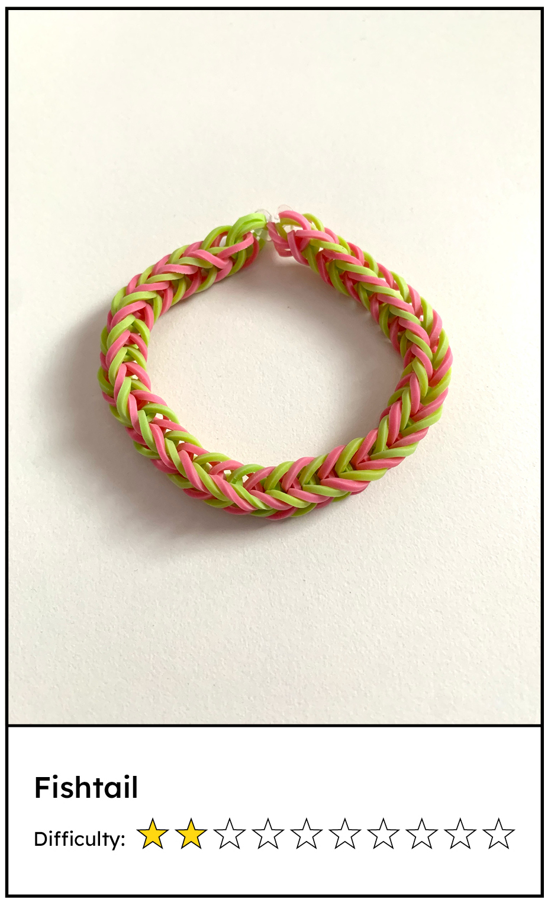
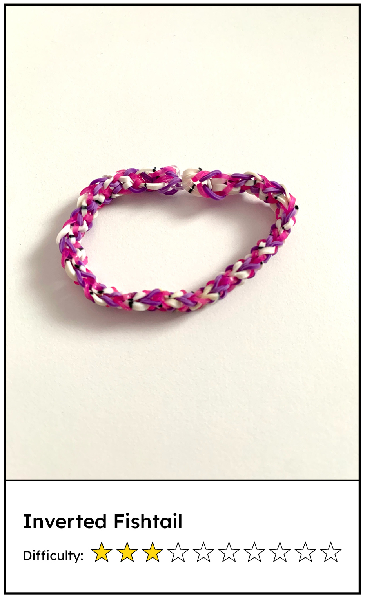
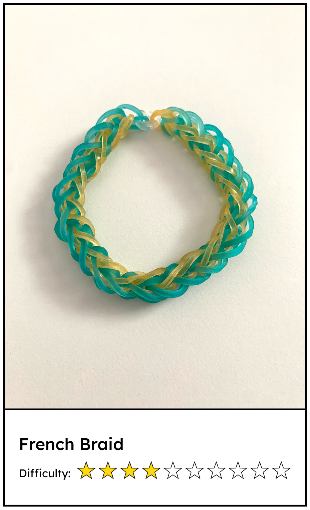
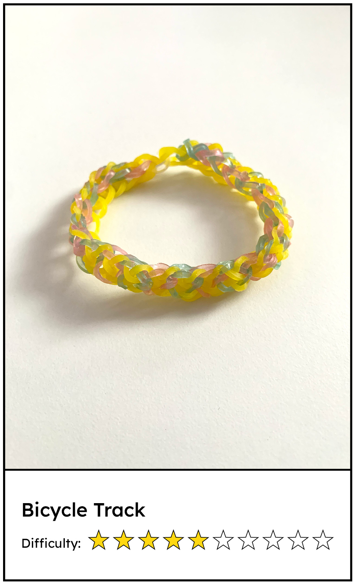
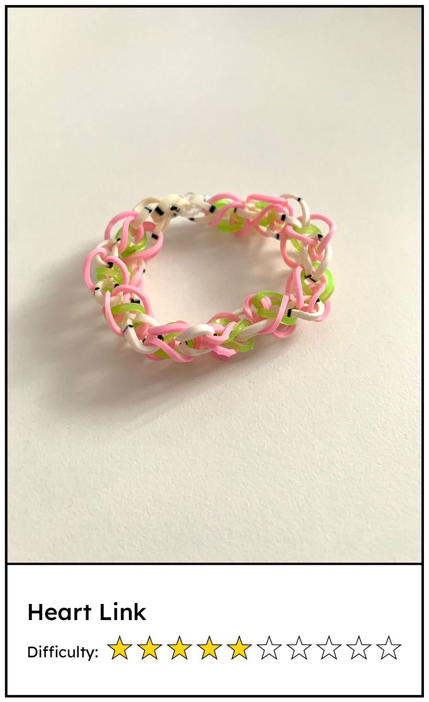
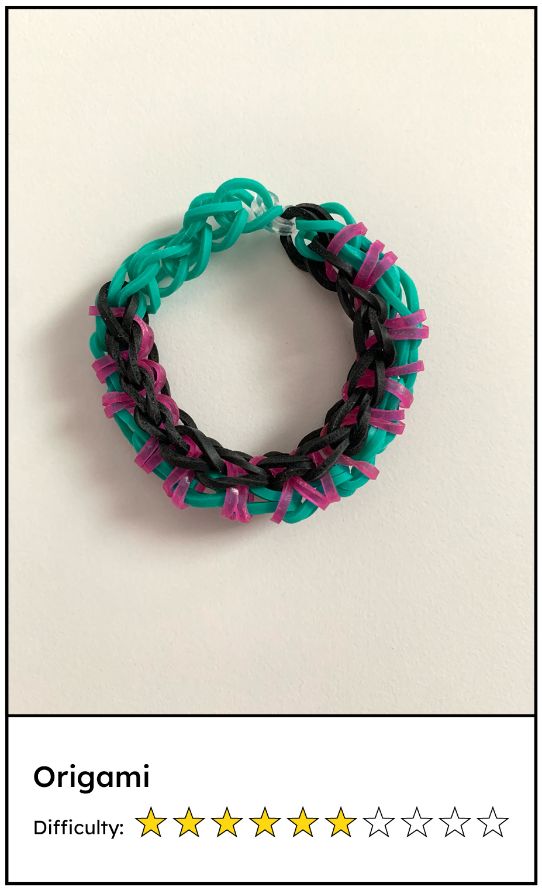
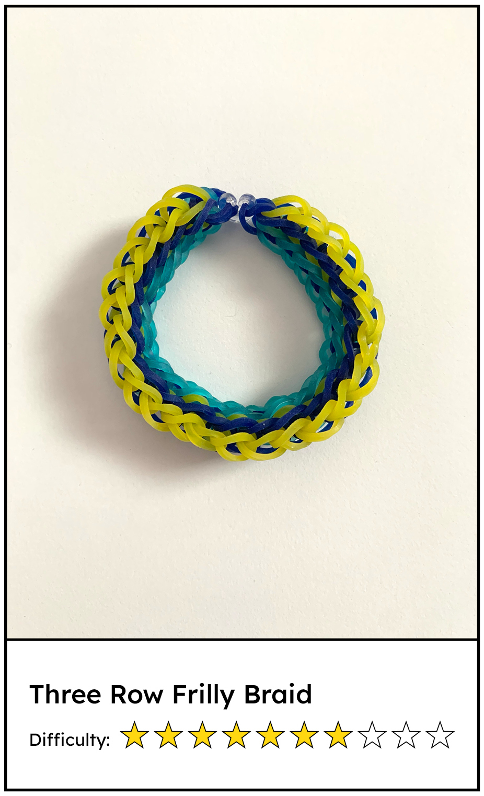
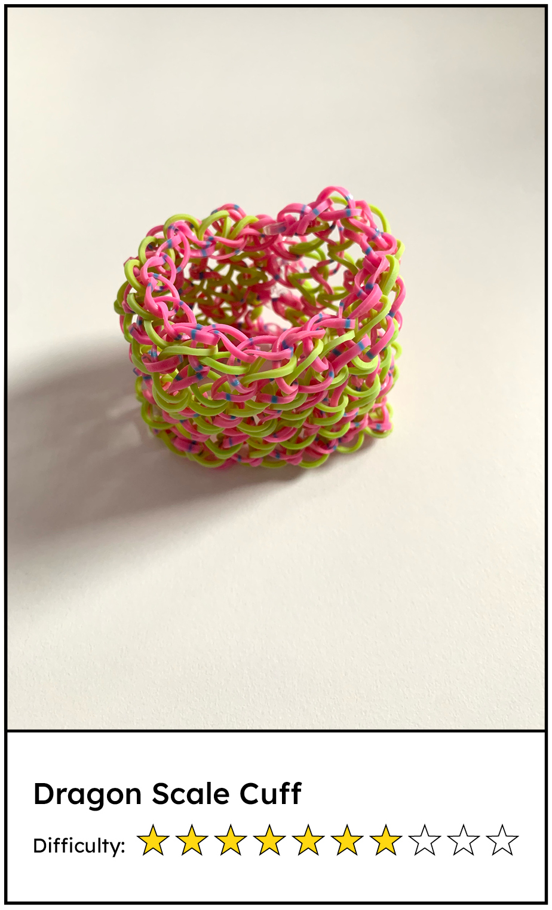

Studio Rainbow
Home
About
Gallery
DIY Tutorials
Fishtail
Inverted Fishtail
French Braid
Bicycle Track
Heart Link
Origami
Three Row Frilly Braid
Dragon Scale Cuff
Our Top Bracelet Selections
Choose a bracelet by selecting its image!







